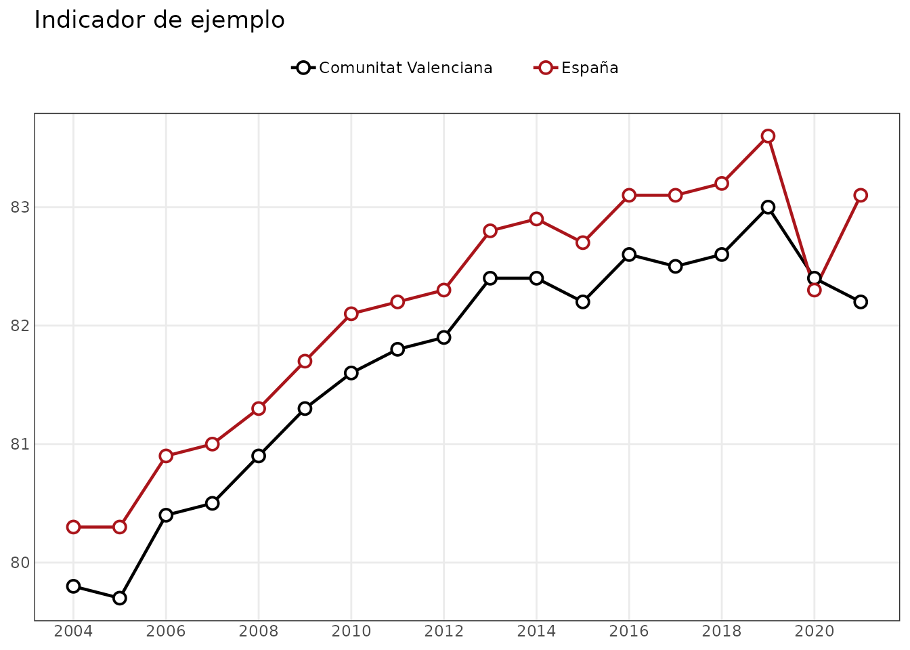
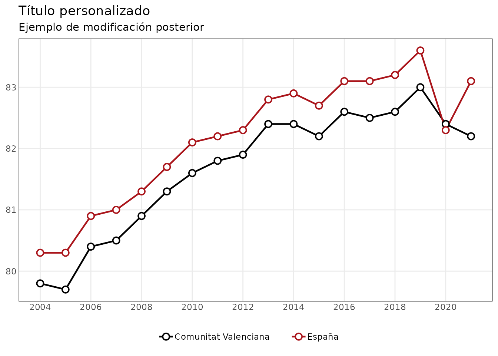

indicaR
indicaR facilita la consulta y visualización de una
colección de indicadores estadísticos.
El paquete ofrece dos grupos principales de funciones:
- funciones para descubrir y consultar los indicadores incluidos en el paquete;
- funciones de visualización basadas en
ggplot2.
Las funciones de visualización no están ligadas a los datos internos
de indicaR: también pueden utilizarse con cualquier
data.frame que tenga la estructura necesaria.
Descubrir los indicadores disponibles
La función listar_indicadores() muestra los indicadores
disponibles y la información básica asociada a cada uno.
indicadores <- listar_indicadores()
head(indicadores)
#> # A tibble: 6 × 5
#> id_dataset variable operacion organismo periodo
#> <chr> <chr> <chr> <chr> <chr>
#> 1 CCAA_SEXO_A_01 ESPERANZA DE V… Indicado… INE 1975-2…
#> 2 CCAA_SEXO_A_02 ESPERANZA DE V… Indicado… INE 1975-2…
#> 3 CCAA_SEXO_EDAD_A_01 TASA DE MORTAL… Tablas d… INE 1991-2…
#> 4 CCAA_SEXO_EDAD_A_02 ESPERANZA DE V… Tablas d… INE 1991-2…
#> 5 CCAA_SEXO_EDAD_NIVELEDUCATIVO_A_01 ESPERANZA DE V… Indicado… INE 2016-2…
#> 6 CV_SECT1_TAMANYOEMP_A_01 EMPRESAS por s… DIRCE INE 2020-2…La columna id_dataset contiene el identificador que debe
utilizarse en las demás funciones de consulta.
Consultar información sobre un indicador
info_indicador() permite conocer con más detalle el
contenido de un indicador.
info_indicador("TERRITORIO_SEXO_EDAD_A_01")
#> $metadata
#> # A tibble: 1 × 5
#> id_dataset variable operacion organismo periodo
#> <chr> <chr> <chr> <chr> <chr>
#> 1 TERRITORIO_SEXO_EDAD_A_01 POBLACIÓN QUE ESTUDIA F… AGENDA20… INE 2015-2…
#>
#> $n_observaciones
#> [1] 880
#>
#> $cobertura
#> $cobertura$anyo_min
#> [1] 2015
#>
#> $cobertura$anyo_max
#> [1] 2025
#>
#> $cobertura$frecuencia
#> [1] "A"
#>
#>
#> $dimensiones
#> dimension n_valores
#> 1 territorio 20
#> 2 tipo_territorio 2
#> 3 cod_ccaa 19
#> 4 ccaa 19
#> 5 cod_provincia 0
#> 6 provincia 0
#> 7 sexo 2
#> 8 edad 2
#> 9 edad_min 2
#> 10 edad_max 2
#> 11 edad_tipo 1Entre otra información, muestra:
- los metadatos del indicador;
- el número de observaciones;
- su cobertura temporal;
- las dimensiones disponibles.
Consultar los valores de una dimensión
Antes de filtrar un indicador puede ser útil comprobar qué valores existen en una dimensión concreta.
valores_indicador(
"TERRITORIO_SEXO_EDAD_A_01",
"sexo"
)
#> [1] "Hombres" "Mujeres"También puede consultarse, por ejemplo, la dimensión de edad:
valores_indicador(
"TERRITORIO_SEXO_EDAD_A_01",
"edad"
)
#> [1] "De 15 a 24 años" "De 25 a 64 años"Obtener los datos
La función principal de acceso a los datos es
consultar_indicador().
Por ejemplo:
datos <- consultar_indicador(
"TERRITORIO_SEXO_EDAD_A_01",
sexo = "Mujeres",
edad = "De 25 a 64 años",
tipo_territorio = "ccaa"
)
head(datos)
#> # A tibble: 6 × 21
#> id_dataset variable operacion organismo frecuencia territorio tipo_territorio
#> <chr> <chr> <chr> <chr> <chr> <chr> <chr>
#> 1 TERRITORIO… POBLACI… AGENDA20… INE A Andalucía ccaa
#> 2 TERRITORIO… POBLACI… AGENDA20… INE A Andalucía ccaa
#> 3 TERRITORIO… POBLACI… AGENDA20… INE A Andalucía ccaa
#> 4 TERRITORIO… POBLACI… AGENDA20… INE A Andalucía ccaa
#> 5 TERRITORIO… POBLACI… AGENDA20… INE A Andalucía ccaa
#> 6 TERRITORIO… POBLACI… AGENDA20… INE A Andalucía ccaa
#> # ℹ 14 more variables: cod_ccaa <chr>, ccaa <chr>, cod_provincia <chr>,
#> # provincia <chr>, sexo <chr>, edad <chr>, edad_min <int>, edad_max <int>,
#> # edad_tipo <chr>, periodo <chr>, anyo <int>, trimestre <int>, mes <int>,
#> # valor <dbl>El resultado es un data.frame que puede utilizarse
directamente en R, transformarse con otras herramientas o exportarse
mediante las funciones que prefiera el usuario.
Visualizaciones
Las funciones gráficas de indicaR devuelven objetos
ggplot, por lo que el resultado puede seguir modificándose
con la gramática habitual de ggplot2.
Series temporales
Para ilustrar que las funciones gráficas también admiten datos externos, creamos un conjunto de datos sencillo:
datos_lineas <- data.frame(
territorio = rep(
c("Comunitat Valenciana", "España"),
each = 18
),
anyo = rep(2004:2021, times = 2),
valor = c(
79.8, 79.7, 80.4, 80.5, 80.9, 81.3,
81.6, 81.8, 81.9, 82.4, 82.4, 82.2,
82.6, 82.5, 82.6, 83.0, 82.4, 82.2,
80.3, 80.3, 80.9, 81.0, 81.3, 81.7,
82.1, 82.2, 82.3, 82.8, 82.9, 82.7,
83.1, 83.1, 83.2, 83.6, 82.3, 83.1
)
)
colores <- c(
"Comunitat Valenciana" = "#000000",
"España" = "#AA151B"
)
grafico_lineas(
datos_lineas,
grupo = "territorio",
colores = colores,
titulo = "Indicador de ejemplo"
)
Personalizar los gráficos
Como las funciones devuelven objetos ggplot, pueden
modificarse después de crearlos.
p <- grafico_lineas(
datos_lineas,
grupo = "territorio",
colores = colores
)
p +
ggplot2::labs(
title = "Título personalizado",
subtitle = "Ejemplo de modificación posterior"
) +
ggplot2::theme(
legend.position = "bottom"
)
Esta separación permite utilizar indicaR de dos
maneras:
- consultar los indicadores incluidos en el paquete y representarlos;
- utilizar únicamente sus funciones gráficas con otros conjuntos de datos.
Para conocer los argumentos disponibles en cada función puede consultarse su ayuda, por ejemplo:
?consultar_indicador
?grafico_lineas